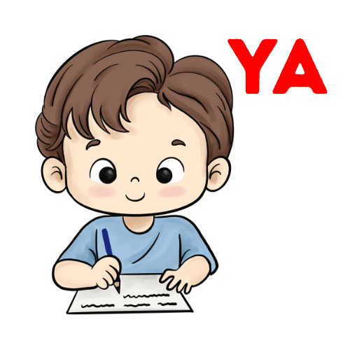

⚠️ Por favor gira tu celular al modo vertical para usar esta página.
Al ver anuncios ayudas a personas a estudiar gratis. Haz clic y disfruta sin interrupciones.

EstudiaYa
Tu navegador no soporta el video.